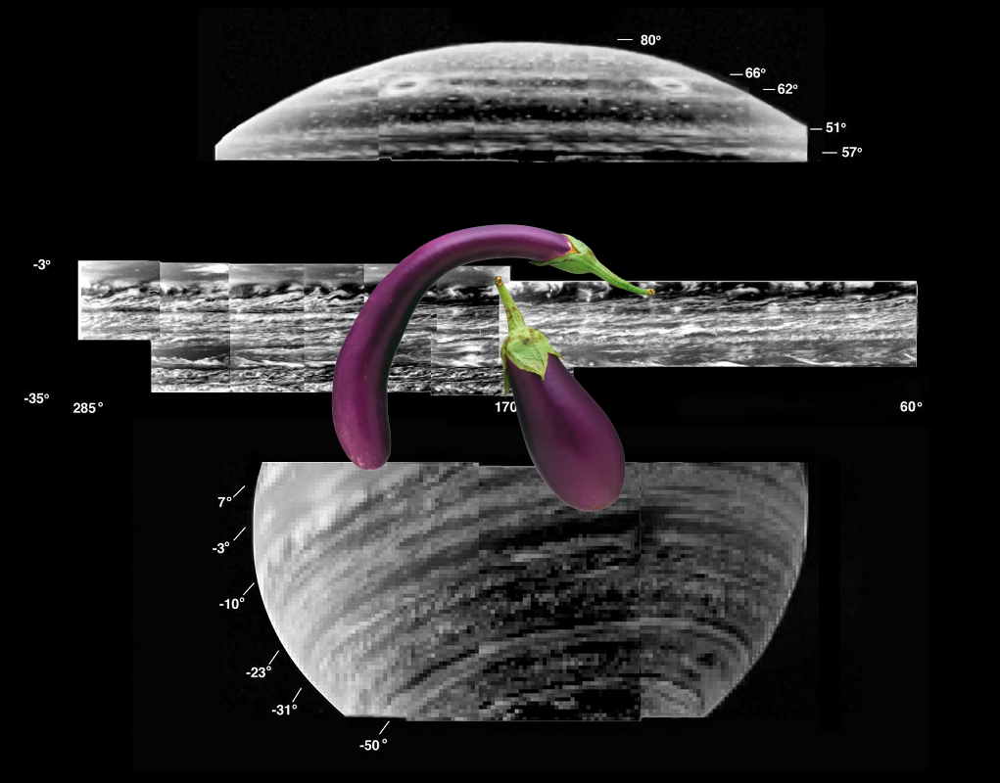
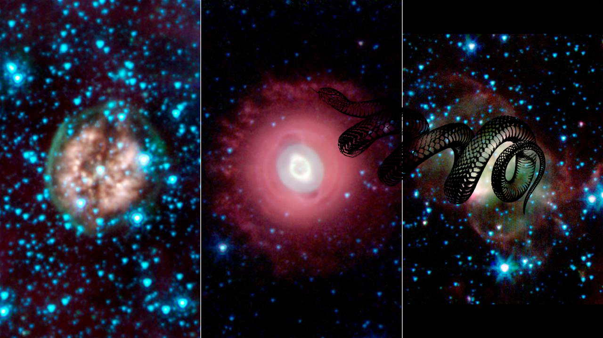

-
A Mystery @ Rosetta Comet.
-
An Unexpected Discovery on Mercury Violent History.
-
???, A Mystery | Bright Peaks, Big Crater.
-
A Mystery on The Bright Rays of Xiao Zhao!
-
Something Strange, An Unexpected Discovery ; Exotic Exoplanet Artist Concept.
-
A Mystery, A Mystery @ Behemoth Black Hole Found in an Unlikely Place
-
Something Strange, An Unexpected Discovery + Black Holes Shine for NuSTAR!
-
A Mystery, An Unexpected Discovery ; Spitzer Celebrates Fourth Anniversary with Celestial Fireworks!
-
A Mystery | A Gallery of Views of Saturn Deep Clouds!
-
A Mystery + Informal Names for Features on Pluto Moon Charon
-
A Mystery, A Mystery – Light and Shadow in the Carina Nebula
-
Something Strange, Something Strange ; Star from the Lizard Constellation Photobombs Hubble Observation!
-
An Unexpected Discovery @ Bright Exposures of Chloride Salt on Southern Mars.
-
A Mystery + Horsehead Nebula
-
A Mystery, A Mystery, ??? + Galaxy M82!
-
A Mystery @ A nitrogen-rich nebula!
-
Something Strange + Halloween Asteroid Rotation
-
Something Strange + Mantled Surface of Ascraeus Mons.
-
A Mystery, Something Strange, A Mystery | WISE Catches the Lagoon Nebula in Center of Action
-
Something Strange on KSC-2014-4606
-
A Mystery, A Mystery – Venus - False Color Image of Alpha Regio!
-
A Mystery on A nitrogen-rich nebula!
-
An Unexpected Discovery – spiral galaxy M83!
-
An Unexpected Discovery – Bright-Dark Boundary Close-up
-
An Unexpected Discovery + 3-D Models of Comet 67P/Churyumov-Gerasimenko Nucleus!
-
Something Strange + Lowlands in Mercury North!
-
 An Unexpected Discovery – Doradus Nebula.
An Unexpected Discovery – Doradus Nebula. -
 An Unexpected Discovery – Jupiter Gossamer Ring Structure
An Unexpected Discovery – Jupiter Gossamer Ring Structure -
Something Strange + Highway to the Danger Zone Artist Concept!
-
 A Mystery | Moon!
A Mystery | Moon! -
 An Unexpected Discovery, A Mystery on NASA SOFIA Captures Images of the Planetary Nebula M2-9!
An Unexpected Discovery, A Mystery on NASA SOFIA Captures Images of the Planetary Nebula M2-9! -
 A Mystery on Beyond the Borders of a Galaxy.
A Mystery on Beyond the Borders of a Galaxy. -

-
??? on Death Beckons Three Aging Stars.
-
 A Mystery, A Mystery – ARC-1989-A89-7006
A Mystery, A Mystery – ARC-1989-A89-7006 -
Something Strange + N44C nebula.
-
An Unexpected Discovery – Active Processes: Bright Streaks and Dark Fans.
-
An Unexpected Discovery | Spitzer Celebrates Fourth Anniversary with Celestial Fireworks
-
Something Strange on Super Moon Rises